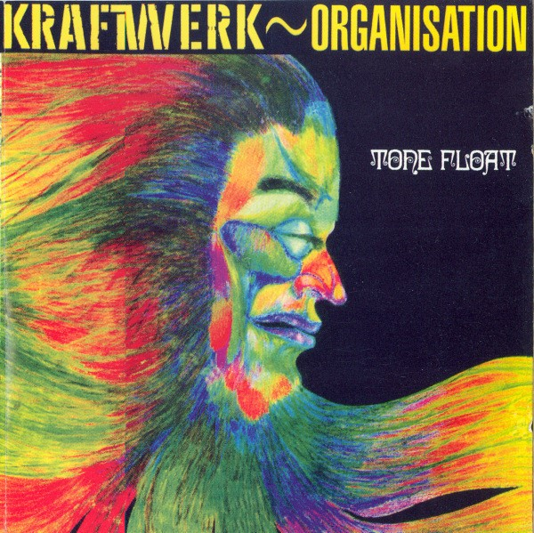
Tone Float(1970)
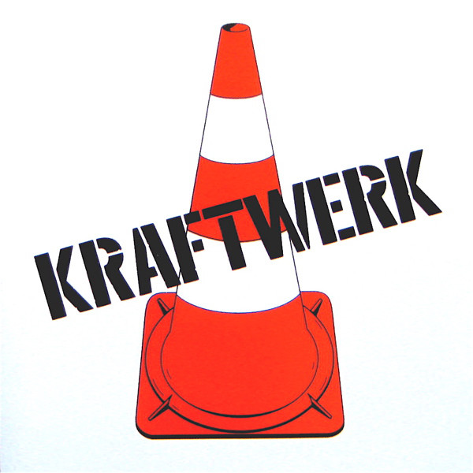
Kraftwerk 1(1971)
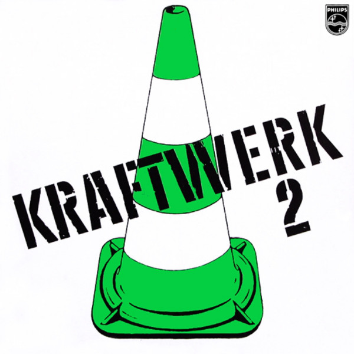
Kraftwerk 2(1972)
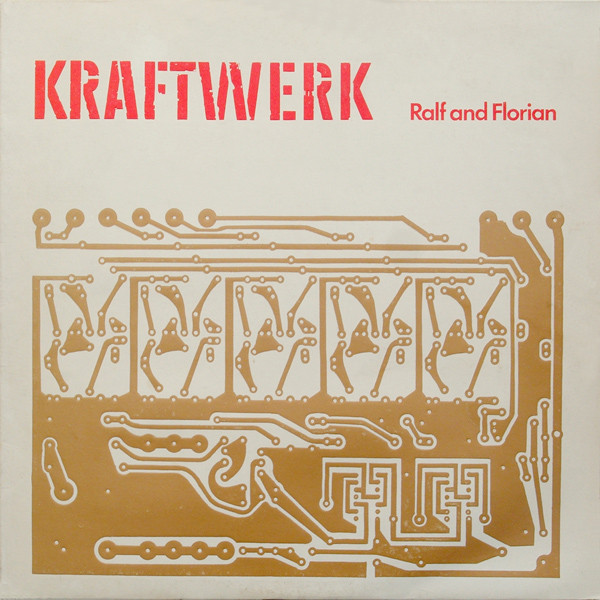
Ralf and Florian(1973)
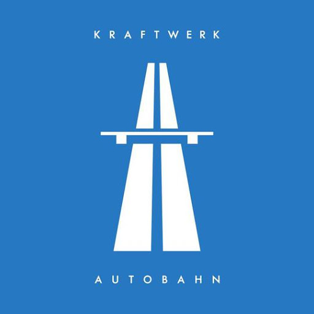
Autobahn(1974)
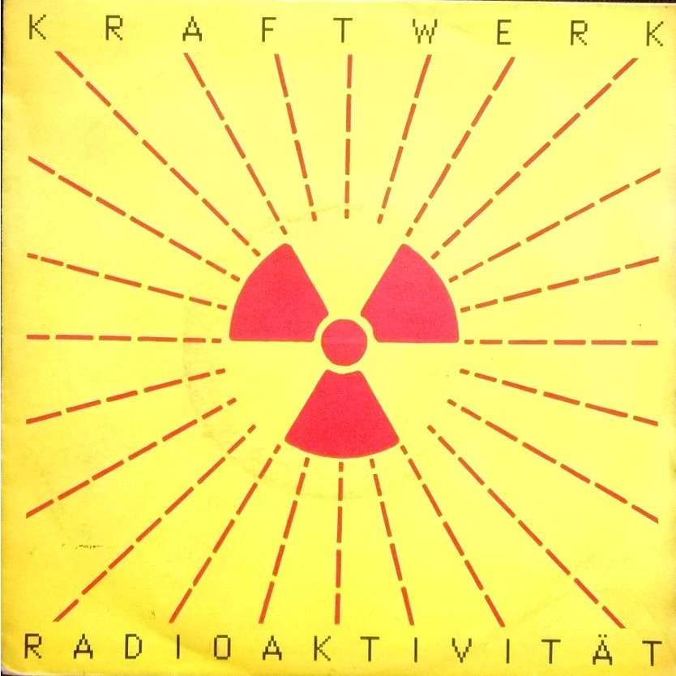
Radioactivity(1975)
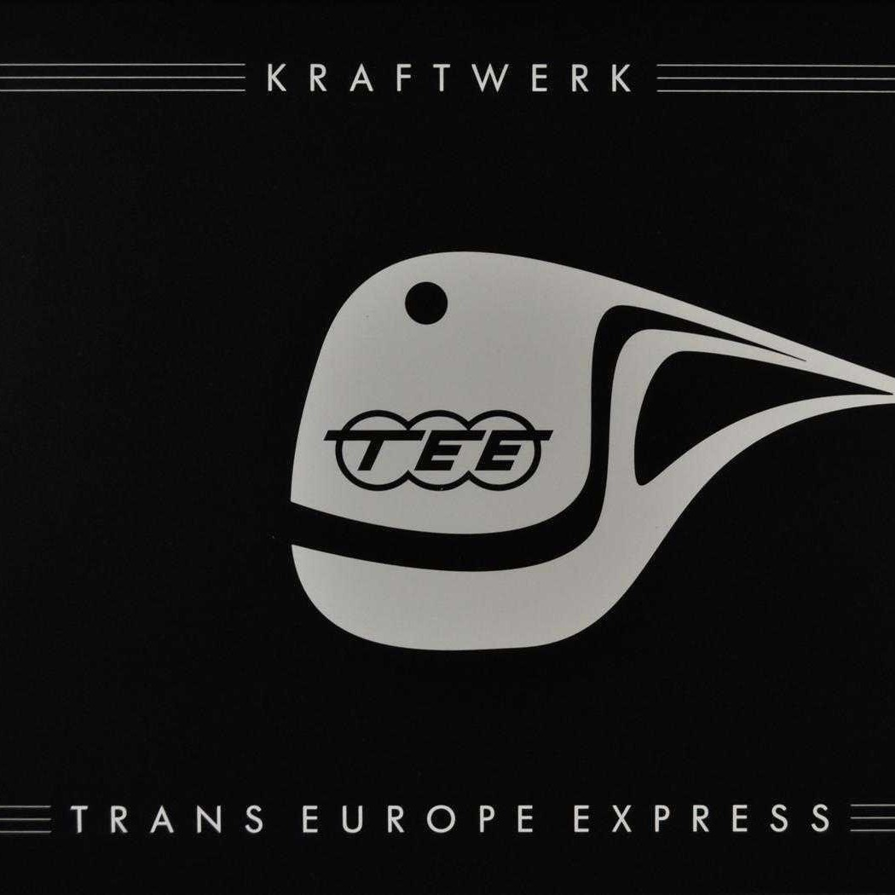
Trans-Europe Express(1977)
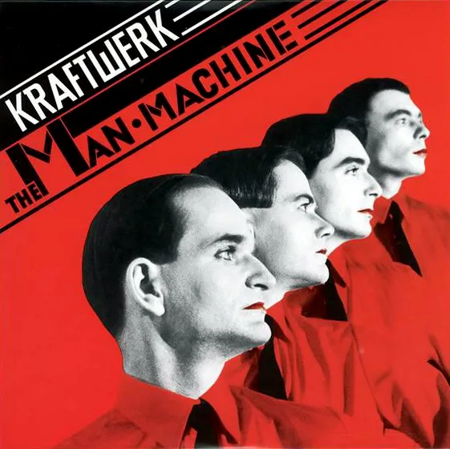
The Man Machine(1978)
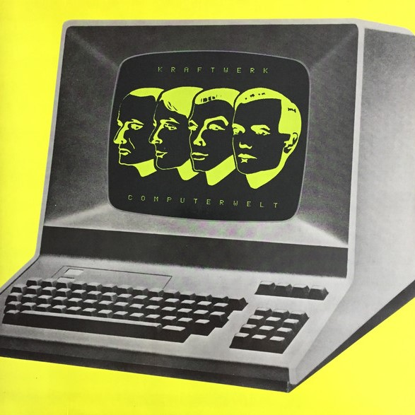
Computer Wold(1981)
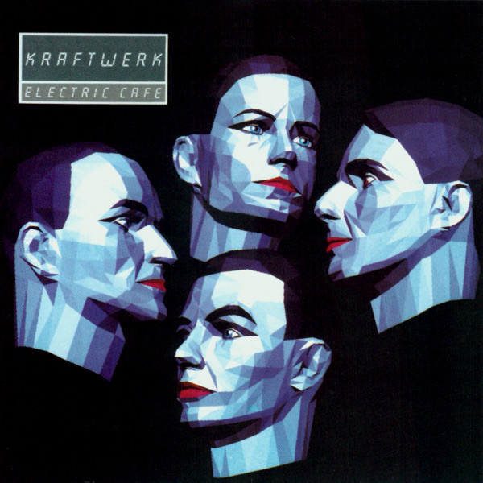
Electric Café(1986)
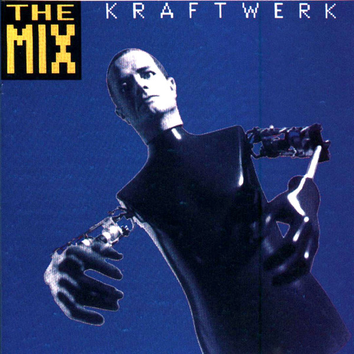
The Mix(1991)
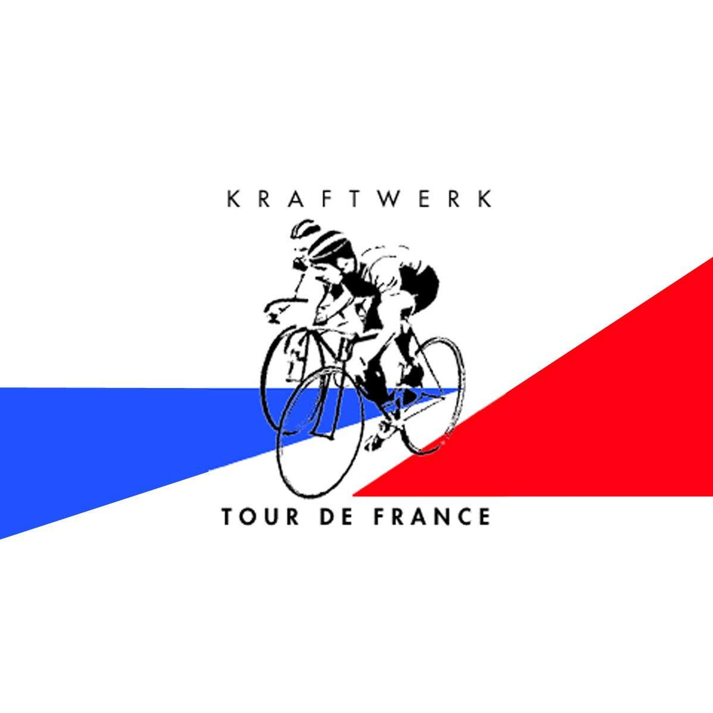
Tour the France (2003)
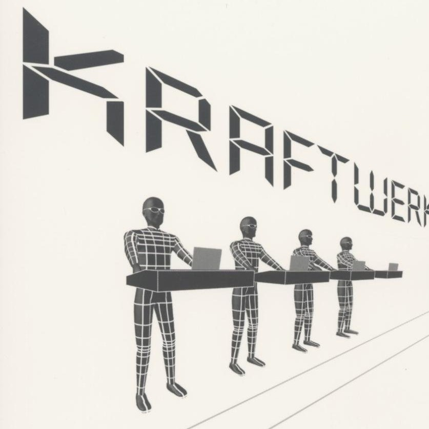
Minumum-Maximum (2005)
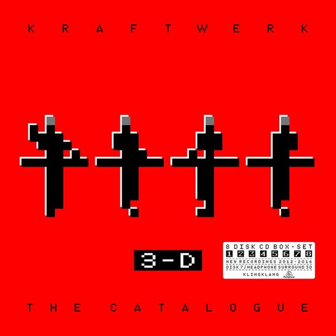
The Catalogue (2017)